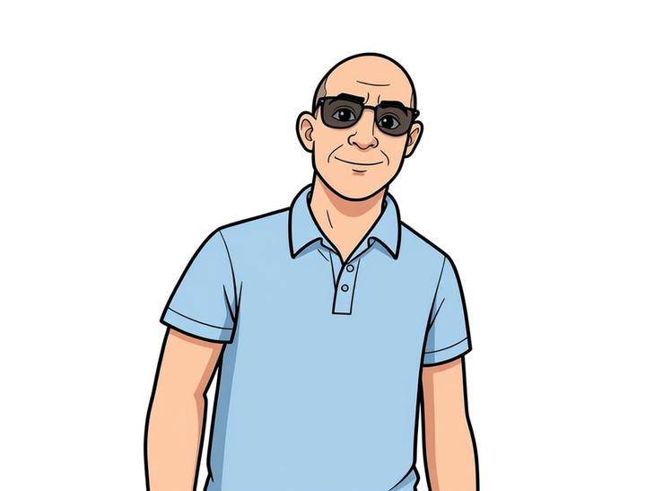
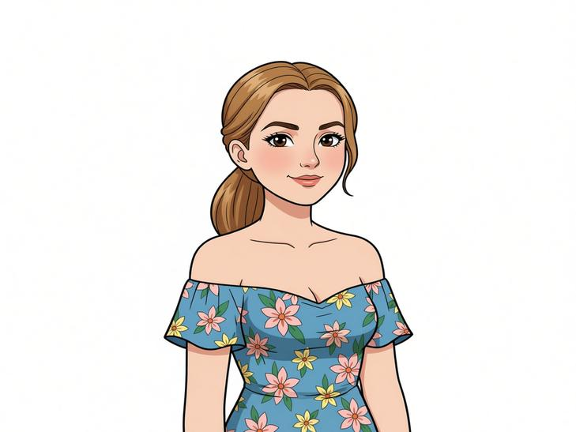

Some stories are born from fire.
This space wasn't built for caffeine. It was built for those who found pain before they ever found safety.

Tony
“I’m almost done, I can't wait... I’m going to use my love for Coffee and open a Coffee Shop!”
Marylou

“That is a good idea, why don't you tie it to mental health? We could have used a place like that!”
“That's an amazing idea, we can build a place that holds and honors Survivors!”
On the way home from therapy, a shop became a Sanctuary.
From Story to Structure
We are currently documenting the restoration of 216 E Overland. Our vision includes moving the historic 1920s boiler to the center of our 7,000 sq ft Game Zone—turning the building's old heart into a new hearth for connection.
Restoration in Progress
NAMI El Paso: Programmatic Advisor
Our story is personal, but our operations are clinical. NAMI El Paso guides our design and training to ensure Coffee & Connections is a safe, resilient environment for the Borderplex.